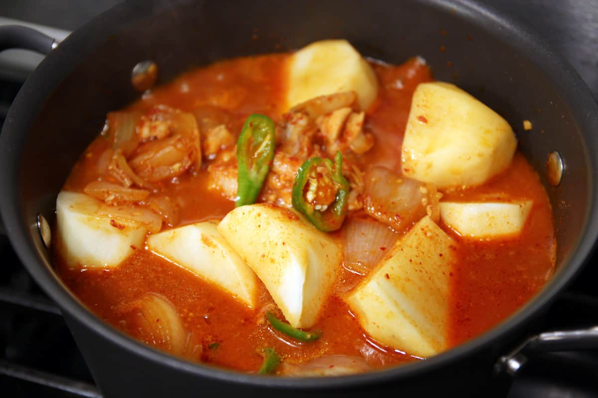

dak-bokkeum-tang

Description
This is maangchi's recipe for dakbokkeumtang, or spicy braised chicken, also called dakdoritang. Many people have requested this dish over the years. It’s spicy, savory, and hearty.
Ingredients
1kg chicken wings or thighs
1/4 Cup soy sauce
1/4 Cup minced garlic
1/4 cup gochujang
1/4 cup gochugaru
1 tbs sugar
2 cups worth of onion
3/4 large potatos
2 green onions
2 green chile peppers (serrano or jalapeno work)
Steps
1. Cut the chicken into bite-sized pieces. Wash and drain.
2. Make seasoning paste by mixing the soy sauce, minced garlic, hot pepper paste, hot pepper flakes, and sugar.
3. Put the chicken and onions into the seasoning paste. Mix it with a spoon.
4. Add 2 cups of water to the pot and mix it up.
5. Bring to a boil over medium high heat for 20 minutes.
6. Meanwhile, peel the potatoes. Wash and drain them, then cut into large chunks 2 inches across. Set aside.
7. Chop the green chili peppers and green onions into small pieces. Set aside.
8. 20 minutes later, add the potato chunks and chopped green chili peppers to the pot. Stir with a spoon, then let it cook with the lid closed for another 20 minutes.
9. Open the lid and cook another 3-5 minutes. Keep the lid open to boil away some broth and thicken.
10. Occasionally take some broth from the bottom of the pot and pour it over the top so everything gets some delicious broth.
11. Transfer it to a large serving plate and sprinkle 2 chopped green onions over top. Serve.